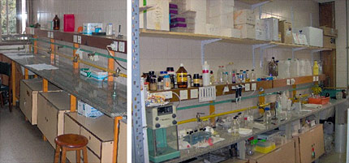
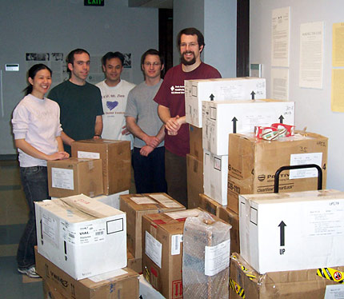

News Archives : 2007 : Recycling Equipment to Help Scientists in Need
by Paul Cruickshank
October 4, 2007

The laboratory of Dr Hector Morbidoni in Rosario, Argentina, before (left) and after receiving equipment from Seeding Labs.
Members of Seeding Labs prepare a shipment for a teaching lab in the Congo: (l to r) Melissa Wu, Ofer Mazor, Jeff Loi, Bret Redwine, and Paul Cruickshank.
In February 2005, a group of Harvard University graduate students spent the better part of a weekend packing up boxes of used laboratory instruments (electrophoresis equipment, magnetic stirplates, a vacuum concentrator) as well as surplus lab supplies (culture dishes, pipettes, and centrifuge tubes). In total, they filled over 30 cartons with supplies and machines collected from labs around the Harvard campuses, shipping it all to a small lab in Argentina that, a few months earlier, they never even knew existed.
The lab in question was run by Ricardo Morbidoni, a scientist who had returned to Argentina after completing a post-doctoral position at Albert Einstein College of Medicine in New York. Dr Morbidoni had recently started his own lab studying drug resistance in tuberculosis – a critical subject in a country where the occurrence of multidrug-resistant TB is ever increasing. His university, Universidad Nacional de Rosario, Argentina, provided him with a laboratory space consisting of empty shelves, so before he could run his first experiment, he had to figure out how to equip his lab. The funding from the university was not enough to purchase a single piece of new equipment. His first task was to re-engineer an old refrigerator to use as an incubator for cell culture work.
In his search for funding and assistance, Dr Morbidoni contacted Seeding Labs. Seeding Labs is a non-profit, student-run group based at Harvard that collects used and surplus biomedical lab equipment from universities and biotech companies in the greater Boston area. One year after receiving the shipment from Seeding Labs, he reported in an e-mail: “We achieved all our goals…funded a student’s fellowship…and most importantly we have gotten results that may merit publication in foreign peer-reviewed journals.”
Seeding Labs was founded in 2002 by graduate students from the Division of Medical Sciences. Their goal was to improve the state of biomedical research in developing countries. Many of these students had spent time doing research in Africa and Latin America, and had observed a common problem: The scientists in these countries possessed the skills and motivation to tackle the major health problems facing the developing world, but they lacked the resources and equipment to do quality research.
Nina Dudnik, a graduate student in BCMP and one of the founders of Seeding Labs, spent a year at the Africa Rice Center in the Ivory Coast and was struck by the scarcity of even the most basic supplies. “Rather than throwing away plastic pipette tips and microfuge tubes, we would wash and reuse the same ones for three months at a time,” said Dudnik. “We had to rely on someone traveling to Europe on business to bring back certain reagents.”
Upon arriving in Boston to begin graduate school, Nina recognized the untapped potential of the hundreds of private and university-based biomedical research labs in Boston. Each year, as these labs upgrade their facilities, they discard thousands of pieces of surplus and used lab equipment still in working order – the very equipment scientists in developing countries lack. Nina sought out a group of graduate students and post-docs who were interested in reclaiming this local surplus equipment and sending it to scientists in need; thus Seeding Labs was born.
In five years of operation, Seeding Labs has sent donated equipment to researchers and clinicians in ten different countries throughout Latin America and Africa. Past recipients include a lab in Paraguay developing molecular diagnostics for Dengue fever, a stem cell lab in Argentina, and the medical clinic of Partners In Health in central Haiti. If purchased new, this equipment would have exceeded the researchers’ budgets by hundreds of thousands of dollars. However, with equipment from Seeding Labs, these scientists can use their limited funds to pay for reagents and, critically, for the training of the next generation of scientists.
Seeding Labs volunteers gather equipment from biomedical research labs throughout Harvard University. They collect all types of scientific instruments like centrifuges, hot plates, and microscopes, as well as standard disposable supplies like Petri dishes and pipettes. All the equipment is tested, cleaned, and then entered into an online database. At the same time, qualified researchers in developing countries make specific requests for instruments and plasticware that they need for their biological research. Seeding Labs then packages and ships this equipment out. The cost of shipping is often paid for by private foundations and third-party non-governmental organizations.
Although Seeding Labs began at Harvard Medical School, the group seeks out donations and volunteers from the entire Harvard community and is now working to strengthen its ties to the Department of Molecular and Cellular Biology. Already a number of MCB labs have donated equipment, but Seeding Labs hopes to make the practice more routine.
Ofer Mazor, a post-doc in the Meister lab and a Seeding Labs volunteer, believes that the organization addresses a common concern in scientific labs: “Most people working in these labs, myself included, feel badly about the volume of discarded equipment, and aren’t aware of a practical solution to the problem: the other well-funded labs around here have no need for most of this used equipment. Seeding Labs solves this problem in a socially responsible way. There’s no reason donations to Seeding Labs can’t become standard practice across a department like MCB.”
In fact, the long-term goal of Seeding Labs is to take this model of operation and replicate it in other universities and private biotech firms, both within Boston and throughout the United States. In Boston alone, there are over 400 biotech companies, and university research labs here are funded annually by over $2.5 billion in grants. If the current successes of Seeding Labs were multiplied many times over, an exciting move would be made towards expanding the research capacity of developing nations, thereby improving the quality and diversity of global scientific research. Some of the key ingredients for this positive change might very well be gathering dust in the back corners of your lab.
How you can help
In order to continue providing this valuable service, Seeding Labs is in constant need of used and surplus lab equipment and supplies. All labs in the Harvard community are invited to donate equipment on an ongoing basis. Donating is simple: contact Seeding Labs via email, detailing the type of equipment you wish to donate, and they will arrange a time to stop by your lab to pick up the item(s).
Seeding Labs is also always seeking out motivated volunteers, and qualified recipient labs. If you would like to help out collecting and packing lab equipment, or become involved in the administration of Seeding Labs, please email info@seedinglabs.org. Likewise, please contact Seeding Labs if you know of a lab in the developing world that would benefit from an equipment donation. Seeding Labs is especially interested in assisting current post-docs in the Boston area who will be returning to their home countries to start research labs.
Seeding Labs accepts most working lab equipment and supplies, including, but not limited to:
|
Unfortunately, at this time, Seeding Labs cannot accept:
|